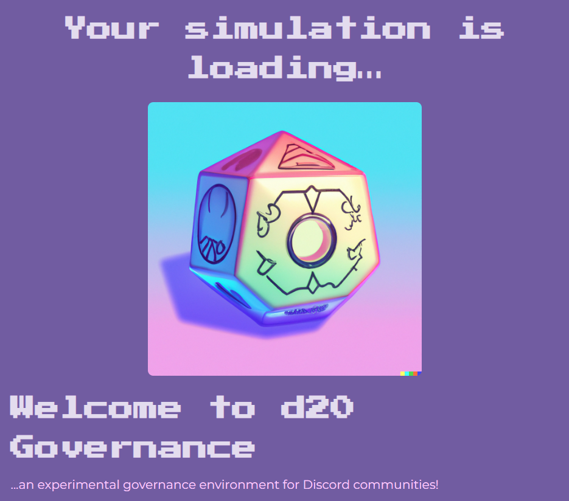
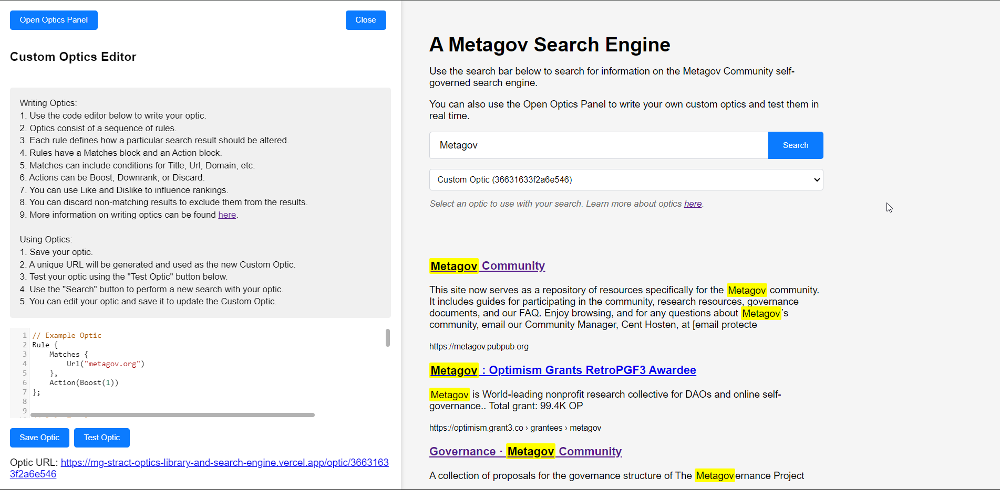

REDWOOD PARLIAMENT @ DWEB CAMP 2022 [reflection] A field experiment in participatory governance at DWeb Camp, documented through reflection on process, facilitation, and emergent decision making.
D20 GOVERNANCE [website] [repo] A Discord bot that turns governance into playable quests, helping groups test lightweight decision processes in an LLM-mediated setting. 
410-GOV [website] [repo] A speculative governance website imagining sleepy, decaying protocol layers for an ephemeral internet.
METAGOV STRACT OPTICS LIBRARY AND SEARCH ENGINE [site] [repo] An implimentation of the Stract search engine extended to enable collective curation and governance of search. 